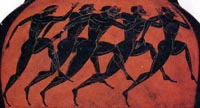

|
|
|
|
As you would expect from your knowledge of the subjunctive mood, verbs in the optative mood may also express continuous or punctual action. You have learned (Chapter XVIII) to add a certain set of endings to the present stem for optative verbs in the active or middle/passive voice expressing continuous action. These endings contain a noticeable vowel, the iota. Review the forms at Thrasymachus page 68.
To form the aorist optative verbs, you will need the aorist stems (third and sixth principal parts), and the aorist optative endings. Strong aorist active and middle optative forms have the same endings that you learned for the present active and middle optative forms.
For weak aorist active and middle, here are the forms of lu/w:
ACTIVE MIDDLE lu/s-aimi lus-ai/mhn lu/s-eiaj lu/s-aio lu/s-eie lu/s-aito lu/s-aimen lus-ai/meqa lu/s-aite lu/s-aisqe lu/s-eian lu/s-ainto For all aorist optative passive voice forms, you will need the aorist passive stem (sixth principle part) and another set of endings:
PASSIVE luq-ei/hn luq-ei/hj luq-ei/h luq-ei~men luq-ei~te luq-ei~en COMMANDS AND PROHIBITIONS IN THE FIRST PERSON PLURAL In the following sentence from Chapter XIX, Nausicaa, using the subjunctive mood in two verbs, urges or commands her maidservants to join her:
mn\ ou}n fobw/meqa a)lla\ parasxw~men au)tw~| i(ma/tia/ te kai\ siti/a kai\ gluku\n oi]non. Therefore let us not fear, but let us give him clothes and food and sweet wine. See Thrasymachus page 265, number 50, for further examples of this use of the subjunctive mood.
DEFINITE AND INDEFINITE ACTIONS For explanations and examples of the uses of the subjunctive and optative moods that you find in Chapter XIX, particularly in general clauses, see Thrasymachus pages 267-268, especially numbers 61-64. Reread Chapter XIX carefully and note each use of the subjunctive or optative.
FEARING Look at these sentences from Thrasymachus Chapter XX:
kai\ o( a)nh/r prw~ton me\n e)fobei~to tou/touj tou\j fu/lakaj mh\ e(auto\n da/koien. A literal translation would be: "And the man at first feared these guards, that they might bite him." fobou~mai ga\r mh\ ei)j th\n patri/da ou)k e)pani/w. For I fear that I might not return to my homeland. A verb that express the idea of fearing, such as a0pore/w, fobou~mai, and de/doika, is often followed by a clause whose verb is in the subjunctive or optative mood. This clause will be introduced by mh/ which is usually translated "that." In this situation, mh/ does not negate the verb of the clause as it does in other kinds of clauses that use non-indicative moods. You can see that ou)k has been added to make the second example above negative.
Reread Thrasymachus Chapter XX and identify each sentence that contains a clause of fearing. See Thrasymachus page 272, number 77, for more examples.
EXERCISE XX, A.Verb Form Recognition
For each of the following verb forms give mood, tense, and voice.
1. ei)pou~sa 11. parasxh/sousi 2. o)fqei/h 12. fai/nh| 3. a)kou/ein 13. e)sw/qhn 4. diele/gonto 14. te/rpointo 5. e)qelh/seien 15. prosi/wmen 6. w!|kteiran 16. e)ge/nonto 7. prosexw/rhse 17. ballome/nh 8. fobei~sqe 18. ke/leuson 9. keleu/saimi 19. qa/lpoito 10. a)pefu/gete 20. peinw|/h Answer Key
INFORMATION ON CHARACTERS IN CHAPTERS XIX and XX
o( Poseidw~n o( Zeu/j o( Alki/nooj in Perseus Forward to Chapter XXI  Back to Contents